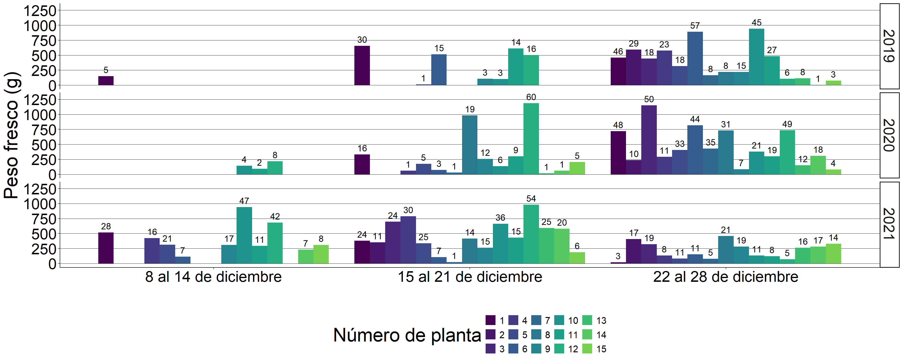
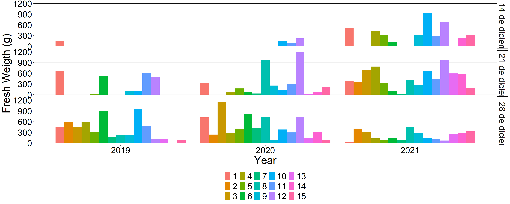

The fruit harvest was staggered in three weeks corresponding to the second, third and fourth week of December of the years 2019, 2020 and 2021. The fruits of each individual were weighed to compare yields between years by ANOVA.


## YEAR N P sd se ci
## 1 2019 15 551.645200 452.357201 116.798127 250.507068
## 2 2020 15 739.866667 568.894618 146.887959 315.043339
## 3 2021 15 937.780000 430.546573 111.166647 238.428745The bars indicate standard deviation.
##
## Call:
## lm(formula = sqrt(P) ~ YEAR, data = dataY2)
##
## Coefficients:
## (Intercept) YEAR2020 YEAR2021
## 21.21873 4.33768 8.45927##
## Shapiro-Wilk normality test
##
## data: e
## W = 0.9835233, p-value = 0.76283## Analysis of Variance Table
##
## Response: sqrt(P)
## Df Sum Sq Mean Sq F value Pr(>F)
## YEAR 2 536.811 268.40546 3.0657 0.057179 .
## Residuals 42 3677.149 87.55117
## ---
## Signif. codes: 0 '***' 0.001 '**' 0.01 '*' 0.05 '.' 0.1 ' ' 1There is no significant difference between years
## # A tibble: 45 × 4
## YEAR ACC total_N total_P
## <fct> <fct> <dbl> <dbl>
## 1 2019 1 81 1264.
## 2 2019 2 29 593.
## 3 2019 3 18 444.
## 4 2019 4 23 579.
## 5 2019 5 19 332.
## 6 2019 6 72 1406.
## 7 2019 7 8 164.
## 8 2019 8 8 219.
## 9 2019 9 18 329.
## 10 2019 10 48 1043.
## # ℹ 35 more rows## P_medio Altura DAP DM Dm Vol
## P_medio 1.000000000 0.663948663 0.597395049 0.634541924 0.466975461 0.709437270
## Altura 0.663948663 1.000000000 0.874520018 0.555577701 0.384904427 0.751448469
## DAP 0.597395049 0.874520018 1.000000000 0.659064806 0.464516111 0.773610880
## DM 0.634541924 0.555577701 0.659064806 1.000000000 0.599278718 0.831537998
## Dm 0.466975461 0.384904427 0.464516111 0.599278718 1.000000000 0.793472512
## Vol 0.709437270 0.751448469 0.773610880 0.831537998 0.793472512 1.000000000## Global model call: lm(formula = P_medio ~ (Altura + DAP + DM + Dm + Vol)^2, data = datos_reg)
## ---
## Model selection table
## (Int) Alt DAP Dm DM Vol df logLik AICc delta weight
## 17 239.500 43.91 3 -103.026 214.2 0.00 0.330
## 2 -148.000 237.1 3 -103.914 216.0 1.78 0.136
## 10 -409.500 160.9 203.50 4 -102.402 216.8 2.57 0.091
## 18 -3.561 107.3 29.93 4 -102.407 216.8 2.58 0.091
## 9 -161.800 336.00 3 -104.410 217.0 2.77 0.083
## 21 483.900 -193.9 56.64 4 -102.641 217.3 3.05 0.072
## 25 118.600 76.57 36.47 4 -102.928 217.9 3.62 0.054
## 19 220.100 6.243 38.12 4 -102.937 217.9 3.64 0.054
## 3 319.500 30.830 3 -104.963 218.1 3.88 0.048
## 6 -393.800 203.0 185.8 4 -103.175 218.4 4.12 0.042
## Models ranked by AICc(x)##
## Call:
## lm(formula = P_medio ~ Vol + 1, data = datos_reg)
##
## Residuals:
## Min 1Q Median 3Q Max
## -442.0104 -111.0227 -83.5541 101.3573 546.0728
##
## Coefficients:
## Estimate Std. Error t value Pr(>|t|)
## (Intercept) 239.4822 153.0253 1.56498 0.141595
## Vol 43.9131 12.0991 3.62944 0.003055 **
## ---
## Signif. codes: 0 '***' 0.001 '**' 0.01 '*' 0.05 '.' 0.1 ' ' 1
##
## Residual standard error: 249.885 on 13 degrees of freedom
## Multiple R-squared: 0.503301, Adjusted R-squared: 0.465094
## F-statistic: 13.1728 on 1 and 13 DF, p-value: 0.00305501